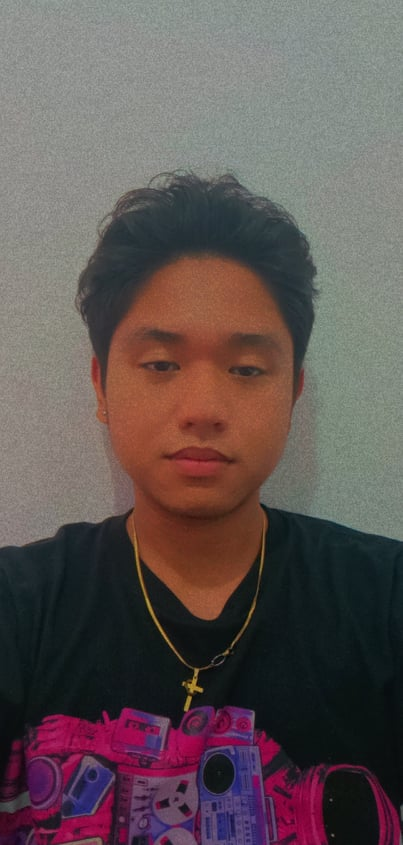

| Rosalyn Balala | SEAN KOBE DIME | ||
| Hi I'm Rosalyn Balala taking of Bachelor of Science in Information Technology with experience of web development and programming, with two certificate past those are National Certification III (Visual graphic design),National Certification II (Animation)Communication and teamwork abilities, as well as prior application design expertise, are necessary. HTML and JavaScript are both useful for creating web pages. | Hello! I'm Sean Kobe Dime. I am third year IT student at University of the East, College of Computer and Systems. As an IT student, my dream is to be a professional full stack developer. Motivated designer and developer with experience creating custom websites through HTML and CSS. Strong collaboration skills and proven history of application development. HTML and JavaScript. MS Access and MySQL | ||
| Personal website | Personal website | ||
 |
|
|  | ADRIANE KYLE C. CERILLO | GIAN EUGENIO | |
| Hi! Im Adriane Kyle Cerillo Studying Bachelor of Science in Information an technology at University of the East I am reliable, motivated, easy to get along with individual.Good at Coding and debugging programs according to design specifications. Knowledge of Program, Database design, Proficient with internet and social media | Hi, I'm Gian, a BSIT student at the University of the East. Living in Sta. Maria, Bulacan. We’re developing a website to help prevent suicide. I see myself as a relentless problem-solver, and I’m always looking for a new challenge. | ||
| Personal website | Personal website | ||
|
|
| CHRISLER JAMES R. DEPUSOY | JUNE ROE G. NASAYAO | ||
| Hi! I'm Chrisler James Depusoy Bachelor of Science in Information Technology Freelancer with more than 4 years of experience in back-end development. I am an expert in database,server, API, and cloud computing.I want to work for a firm where I can be part of a winning team and have the possibility to further my career. | Hi! i'm June Roe Nasayao, Student at University of the East taking Bachelor of Science in Information Technology. Good at solving programming problems. Knows the fundamental of programming especially Java, C#, and Python. Can build a responsive website using HTML, CSS, and Javascript. | ||
| Personal Website | Personal Website | ||
|
|